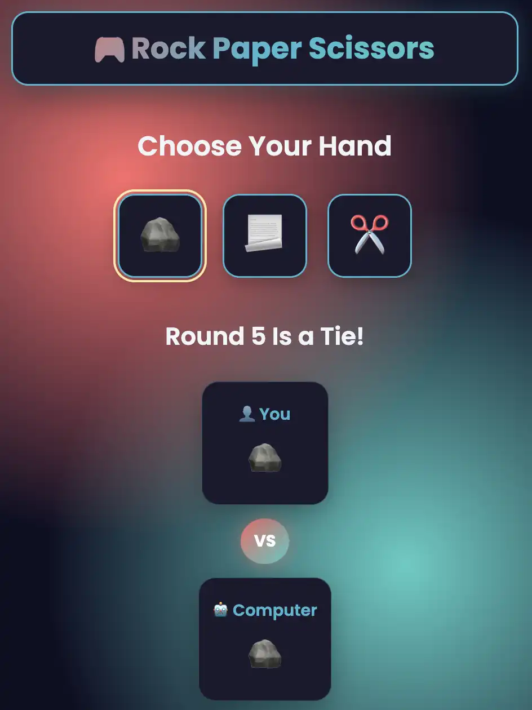

Library App
Add books, track reading status, and manage a browser-persisted personal collection.
View Project →
Add books, track reading status, and manage a browser-persisted personal collection.
View Project →
A responsive browser game with score tracking, animated feedback, and focused interaction design.
Play Game ↗
A clean implementation of the classic game with state management, win detection, and responsive play.
Play Game ↗